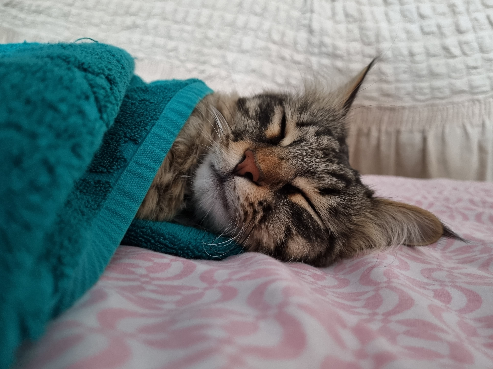
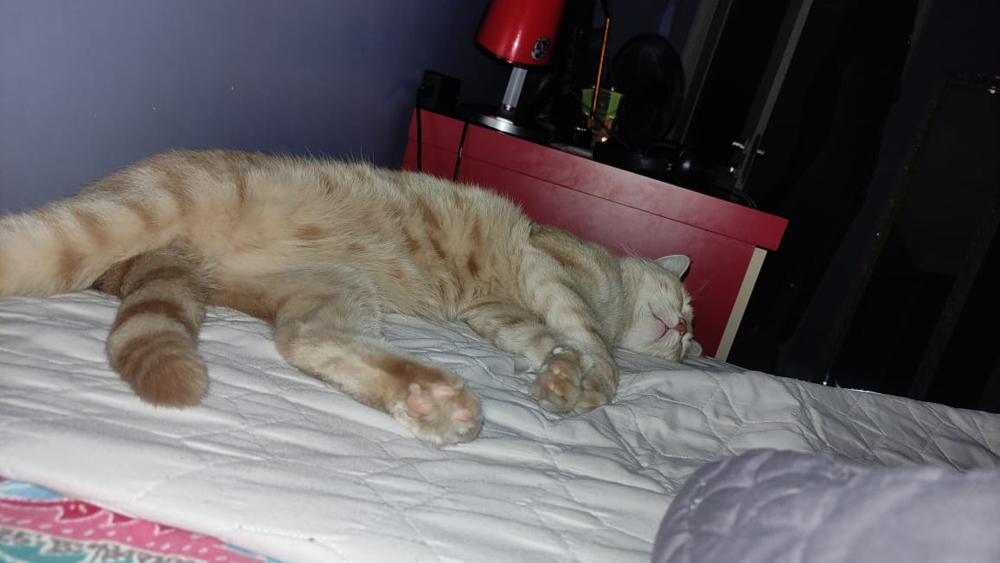
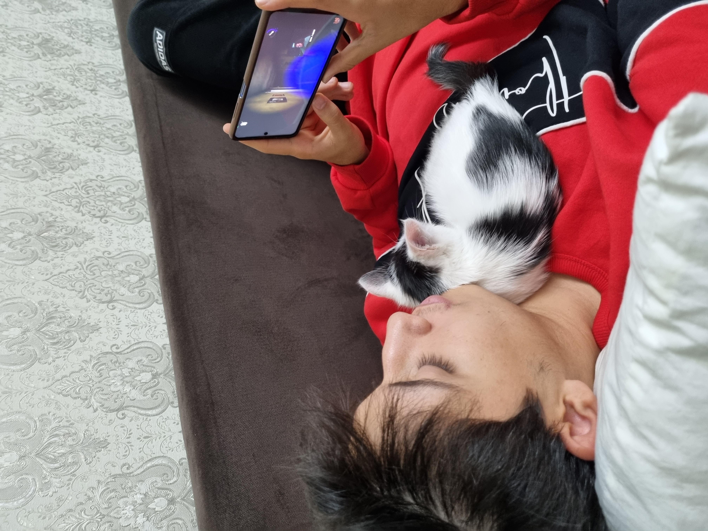

Sleep is an important part of a healthy lifestyle. Getting enough sleep has mental and physical benefits. When you get enough sleep, you should wake up feeling refreshed for the day.
Exercise, time of eating, growth, attitude affects the quality of sleep. Sleep plays a key role in growth, will be relaxed when sleeping. However, poor sleep will reduce HGH production.
Quality Sleep is essential for physical and mental health. It helps regulate hormones, boost the immune system, and improve mood.
Lack of sleep can disrupt hormones that regulate appetite and metabolism, leading to weight gain.
Sleep helps with memory consolidation, learning, and concentration.
Age
Recommended Amount of Sleep
Newborns (0-3 months)
14-17 Hours
Infants (4-11 months)
12-15 Hours
Toddlers (1-2)
11-14 Hours
Preschoolers (3-5)
10-13 Hours
School age children (6-13)
9-11 Hours
Teenagers (14-17)
8-10 Hours
Adults (18-64)
7-9 Hours
Older adults (65+)
7-8 Hours
Tips and Tricks:
Keep your bedroom cool, quiet, dark, and quiet. Invest in comfortable bedding and avoid screens before bed.
Try to go to bed and wake up at the same time each day, even on weekends.
Limit caffeine and alcohol intake, especially in the evening. Avoid heavy meals close to bedtime.


What is Quality Sleep?
Healthy sleep is important for your overall well-being. There are several indicators that your sleep is healthy:
You fall asleep within 15-20 minutes of lying down to sleep.
You regularly sleep a total of seven to nine hours in a 24-hour period.
While in bed, your sleep is continuous you don't have long periods of lying awake when you wish to be sleeping.
You wake up feeling refreshed, as if you've "filled the tank."
You feel alert and are able to be fully productive throughout the day. You also don't fall asleep unintentionally, like while watching television.
Your partner or family members do not notice the following behaviors from you while you sleep: snoring, pauses in breathing, restlessness, unusual movements, frequent nighttime awakenings to use the bathroom, waking up very thirsty, or other nighttime behaviors.

Sleep and Phone Usage:
Phones can be psychologically stimulating. Seeing exciting, stressful, or enjoyable content can be keeping us awake at night.
Phones are also physiologically stimulating. The light from phones suppresses the sleep hormone melatonin, which can make it more difficult to fall asleep.
Try a digital curfew where you stop using phones 2 hours, 1 hour, or at least 15 min hour before bed.
Keep all televisions, computers, and telephones out of the sleeping environment. Reserving the sleeping environment for sleep helps your mind and body connect being in your bedroom with being asleep.
If you must use your phone at night, try a light filter option or dark mode to reduce the amount of blue light emitting from the phone.
Sleep Disorders and Treatments:
Common Sleep Disorders:
Insomnia: Difficulty falling or staying asleep.
Sleep apnea: Stop and restart breathing during sleep.
Restless legs syndrome: Uncomfortable sensations in the legs that make it difficult to sleep.
The Impact of Stress on Sleep
Stress can make it difficult to fall asleep and stay asleep.
Practice relaxation techniques like meditation, deep breathing, or yoga to reduce stress and improve sleep.
Sleep and Aging
As we age, our sleep patterns may change, and we may experience more frequent awakenings during the night.
Establish a regular sleep routine, create a comfortable sleep environment, and limit caffeine and alcohol intake.
Sleep and Children
Importance of Sleep for Children: Children need adequate sleep for growth, development, and learning.
Creating a Sleep-Conducive Environment for Children: Establish a bedtime routine, create a calming bedtime atmosphere, and limit screen time before bed.
Addressing Sleep Problems in Children: If your child is having trouble sleeping, consult with a pediatrician for advice.